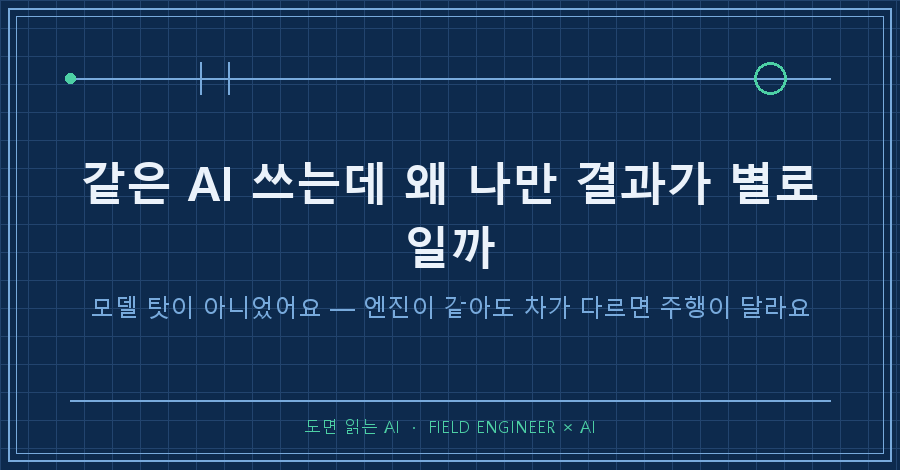
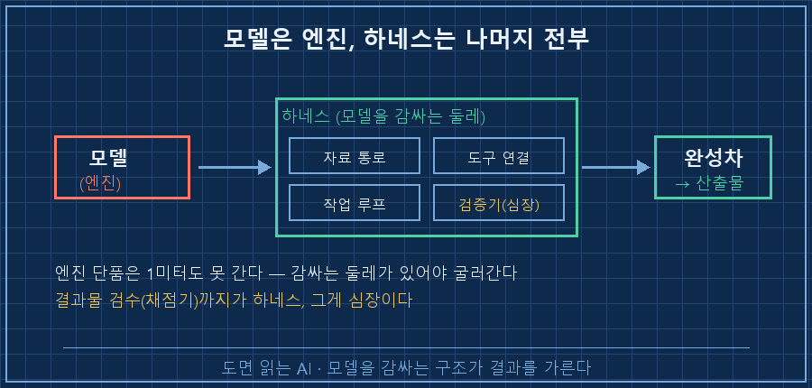
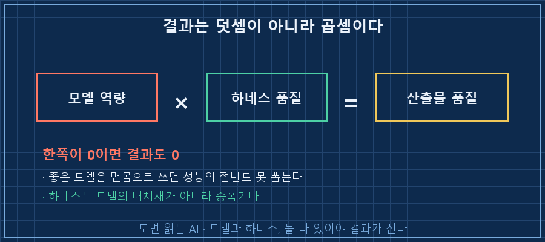
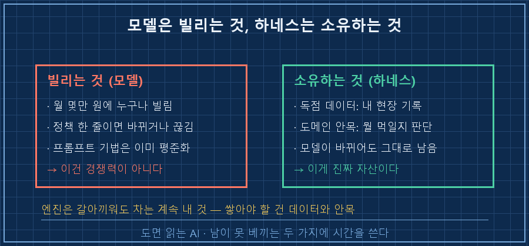

같은 AI를 쓰는데 결과가 몇 배씩 갈려요.
결론부터 말하면, 모델 차이가 아니라 모델을 감싼 '하네스' 차이예요.
오늘은 이 하네스가 뭔지, 뭘 손봐야 결과가 달라지는지 정리해볼게요.
AI 결과물 차이는 결국 어떤 모델 쓰냐 문제라고들 하잖아요?
저도 그런 줄 알았거든요.
근데 같은 모델, 같은 요금제를 쓰는 사람들끼리도 결과가 몇 배씩 갈리는 걸 직접 보면서 생각이 완전히 바뀌었어요.
먼저 짧게 소개하면, 저는 15년차 제어 엔지니어입니다.
수소 설비 제어판넬 설계하고, PLC 코드 짜고, 현장 가서 결선 확인하는 게 일이에요.
요즘은 이 일의 상당 부분을 AI랑 같이 하고 있고요.
그 차이를 만드는 물건 이름이 좀 낯선데, '하네스(Harness)'라고 불러요.
쉽게 말하면 모델을 감싸서 실제로 일하게 만드는 둘레 전체예요.
1. 엔진만 사면 차가 굴러갈까요
모델은 엔진이에요.
아무리 좋은 엔진도 단품으로는 1미터도 못 가잖아요.
차체가 있어야 하고, 바퀴, 핸들, 계기판까지 있어야 완성차가 되죠.
AI도 똑같더라고요.
모델을 감싸서 실제로 일하게 만드는 둘레 전체,
자료를 먹이는 통로,
도구를 쥐여주는 연결,
작업 순서를 도는 루프..
이걸 통틀어 하네스라고 불러요.
그 완성차가 목적지까지 주행한 결과가 산출물이고요.

여기서 제일 의외였던 게 하나 있어요.
도착해서 차를 점검하는 것, 그러니까 결과물 검수까지도 하네스라는 거예요.
AI가 코드를 고치고, 빌드하고, 에러를 읽고, 다시 고치는 걸 사람 없이 반복하는 사례가 있거든요.
이게 되는 이유는 모델이 특별히 똑똑해서가 아니에요.
컴파일러라는, 거짓말 안 하는 채점기가 붙어 있어서예요.
맞고 틀림이 즉시 판정되는 환경만 만들어주면 AI는 알아서 굴러가요.
검증 장치가 하네스의 심장인 셈이죠.
2. 검증기가 없으면 이렇게 멈춰요
제가 도면을 자동으로 다시 그리는 학습 루프를 돌린 적이 있어요.
AI가 그려보고, 채점기가 점수 매기고, 통과 못 하면 다시 그리고.. 이걸 사람 없이 반복하게 짜뒀거든요.
그런데 어느 날 이런 로그를 남기고 멈춰 있더라고요.
[자동 재작도 학습 알림] STOP_3FAIL
3회 연속 비-PASS. 루프 중단 — 사람 호출.
생성: 2026-07-01T14:00:03처음엔 실패 로그라 좀 허탈했는데, 곱씹어보니 이게 하네스가 제대로 일한 증거더라고요.
채점기가 없었으면 AI는 그럴듯하게 틀린 도면을 계속 뽑아냈을 거예요.
채점기가 붙어 있으니까 "3번 연속 기준 미달"을 스스로 알아채고, 헛돈 그만 태우고 사람을 부른 거죠.
반대로 이 자동화가 언제 돌지 말지도 스스로 판단하게 해뒀어요.
{"decision": "GO", "reason": "예산 여유 — 학습 1회 진행"}
{"decision": "SKIP", "reason": "지금 한창 사용중 — 충돌 회피"}여기까지가 하네스예요.
모델은 그림만 그리고, 언제 돌지·잘 됐는지·안 되면 어떻게 할지는 전부 그 둘레가 판단하는 거죠.
3. 결과는 곱셈이더라고요
그럼 하네스만 잘 만들면 모델은 아무거나 써도 될까요?
이것도 아니에요.
결과물 품질은 모델 역량 곱하기 하네스 품질, 곱셈이거든요.
곱셈이라 한쪽이 0이면 결과도 0이에요.
약한 모델에 최고의 하네스를 붙여도 복잡한 설계나 코딩은 천장이 낮고,
좋은 모델을 맨몸으로 쓰면 그 성능의 절반도 못 뽑아요.
하네스는 모델의 대체재가 아니라 증폭기예요.

제 경우를 말씀드리면, 설비에 센서 10개를 추가하는 작업이 있었어요.
IO 리스트 수정하고,
제어 로직 반영하고,
화면 태그 만들고..
원래 3일짜리 일인데 반나절에 끝났습니다.
모델이 좋아서가 아니에요.
몇 달 동안 쌓아둔 지식 문서, 그러니까 도면 정보, 신호 명명 규칙, 과거에 제가 반복한 실수 기록까지 먹이고,
결과를 기존 코드와 교차검증하는 절차를 붙여놨기 때문이에요.
같은 모델 쓰는 옆자리 동료와 결과가 갈리는 지점이 정확히 여기더라고요.
여러분 주변에도 이런 격차, 보이시나요?
4. 근데 ROI가 무한은 아니에요
솔직히 처음엔 저도 들떴어요.
이거 구축해두면 투자금을 무한정 뽑겠다 싶었거든요.
과장이었어요..
하네스는 만드는 데 고정비가 들고, 돌릴 때마다 비용이 나가요.
그래서 아무 일에나 하네스를 붙이면 오히려 손해예요.
쓸수록 이득이 쌓이는 복리가 되려면 세 가지 조건을 통과해야 하더라고요.
하네스 ROI 3요건 체크리스트
- ☐ 반복되는 일인가 — 일회성이면 그냥 손으로 하는 게 빨라요
- ☐ 결과를 채점할 방법이 있는가 — 맞고 틀림을 판정할 장치(2번의 채점기)가 있어야 해요
- ☐ 틀렸을 때 사람이 잡아줄 장치가 있는가 — 앞의 STOP_3FAIL처럼 사람을 부르는 회로요
이 셋을 통과하면 쓸수록 이득이 쌓여요.
반대로 부실한 하네스는 비용만 태우면서 그럴듯한 오답을 대량 생산해요. 마이너스 ROI도 얼마든지 나오는 거죠.
무한이 아니라 조건부 복리예요.
5. 그럼 뭘 쌓아야 하냐면요
모델은 누구나 월 몇만 원에 빌려요.
하네스 만드는 방법도 이미 다 공개돼 있고, 프롬프트 기법은 평준화됐어요.
그러니까 이것들 자체는 경쟁력이 아니에요.
남이 못 베끼는 건 두 가지더라고요.
하나는 독점 데이터예요. 내 현장의 도면, 운전 기록, 실수 이력 같은 건 검색해도 안 나오니까요.
다른 하나는 도메인 판단력이에요. 그 데이터 중에 뭘 골라 정제해서 먹일지 아는 안목이요.
이 둘이 합쳐진 게 나한테 최적화된 하네스고, 이건 모델이 바뀌어도 그대로 남아요.
엔진은 갈아끼워도 차는 계속 제 것인 거죠.

자주 묻는 질문 (FAQ)
Q. 하네스가 결국 프롬프트를 잘 쓰는 거랑 같은 말인가요?
아니에요. 프롬프트는 그 순간 한 번 잘 물어보는 거고, 하네스는 자료를 먹이는 통로·도구 연결·검증 루프까지 구조로 남겨두는 거예요. 프롬프트는 휘발되고, 하네스는 자산으로 쌓여요.
Q. 그럼 좋은 모델은 안 중요한가요?
중요해요. 다만 곱셈이라(3번) 모델만 좋고 하네스가 0이면 결과도 0이에요. 둘 다 있어야 해요. 저는 모델 뉴스보다 제 하네스 다듬는 데 시간을 더 씁니다.
Q. 저는 개발자가 아닌데 하네스를 만들 수 있나요?
2번의 "채점기"가 꼭 컴파일러일 필요는 없어요. "기존 파일과 대조", "정해진 양식과 비교" 같은 사람이 정한 규칙도 채점기예요. 반복되는 일이면 거기서부터 시작하면 돼요.
정리하면요
같은 AI를 쓰는데 결과가 다른 건 모델 차이가 아니라 그 주변 구조, 하네스 차이예요.
결과는 모델과 하네스의 곱셈이고, 검수 장치까지가 하네스고, 진짜 자산은 내 데이터와 안목이에요.
그래서 저는 요즘 모델 뉴스보다 제 하네스 다듬는 데 시간을 씁니다!
다음 글에서는 이 검수 루프를 실제로 어떻게 붙였는지, 앞에서 본 STOP_3FAIL처럼 실패했던 사례까지 포함해서 써볼게요.
여러분은 AI가 내놓은 결과물을 지금 뭘로 채점하고 계세요?
현장에서 AI를 굴리다 깨지고 고친 기록은 makefield.ai 에 계속 쌓고 있어요.